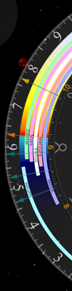
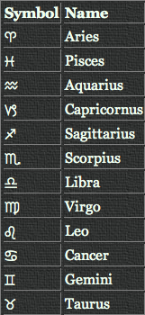
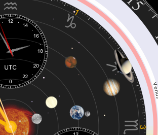
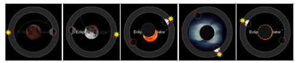

Privacy
Emerald Chronometer for the Web
Overview
Emerald Chronometer for the Web is a fully client-side application. It runs
entirely in your browser and does not communicate with any application server
for its core functionality.
Data Collection
The app itself does not collect, store, or transmit any personal data to any
application server. There are no app-level analytics, tracking pixels,
cookies, or telemetry of any kind.
Web Server Logs
When the app is served over HTTP or HTTPS, the hosting provider (SiteGround)
records standard web server access logs for each page and resource request.
These logs include:
- Your IP address
-
The URL requested, including query-string parameters such
as latitude, longitude, city name, and timezone
-
Timestamp, HTTP status code, referrer, and browser
user-agent string
These logs are retained by SiteGround for up to 30 days and are used solely
for security monitoring and troubleshooting. They are not analyzed for user
tracking purposes.
When running from file:// URLs (a local copy of the app), no
server is involved and no logs are generated.
Map Tile Requests
When you use the location dialog (on pages served via http:// or
https://), the app fetches map tile images from
OpenStreetMap
to display a preview of the selected location.
These requests are standard image fetches and
do not include any metadata identifying the tile coordinates as your
location
— OpenStreetMap sees only which map tile was requested, the same as any map
browsing.
Browser Location (Geolocation API)
If you tap "Use device location via browser", the app uses the browser's
Geolocation API to obtain your coordinates. This data is processed entirely
within the browser — the app never sends it to any application server.
The resolved coordinates are matched against a bundled database of
approximately 47,000 cities to display a human-readable location name. This
reverse-geolocation lookup happens entirely in the browser — no external
geocoding service is contacted.
URL Parameters
The app stores your location settings (latitude, longitude, city name,
timezone) as URL query parameters. This is the only persistence mechanism — no
cookies or local storage are used.
Note: Because these parameters are part of the URL, they are
visible in your browser history and, when served over HTTP or HTTPS, in the
hosting provider's access logs.
Third-Party Services
Contact
For questions about this privacy policy, please visit the
project on GitHub.
Last updated: May 2026
Observatory is an astronomical clock which displays a variety of
astronomical information for your location. It is similar in that way to the
Emerald Chronometer watch faces, but was designed from
the start to take advantage of a larger display. Much of the supporting
technology, including the highly accurate astronomical algorithms, is shared
with Chronometer.
Displays
Clock
First of all, it's an ordinary clock. The main hands (gold colored) display
the hours, minutes and seconds in the usual 12-hour format. To read it more
precisely use the small numbers and tick marks on the inner edge of the rings.
The thin central hand with the large white arrow head and the large white
numbers and tick marks indicate the time in 24-hour format (with midnight on
top by default; see Noon on Top, below).
It is also possible to change the clock's time and to animate it at very high
rates. See Setting the time, below.
Moon
In the upper left Observatory displays the Moon as it appears from the current
location at the clock's time. When the phase is a thin crescent Observatory
simulates the illumination of the dark side by reflected light from the Earth
(this is known as "Earthlight" or "Earthshine " or "the Moon's ashen glow"). In addition, the image rotates to match the
Moon's apparent orientation as it moves across the sky and changes size to
match the Moon's apparent size as its distance from the Earth changes around
its elliptical orbit. (Observatory does not show the Moon's libration.)
" or "the Moon's ashen glow"). In addition, the image rotates to match the
Moon's apparent orientation as it moves across the sky and changes size to
match the Moon's apparent size as its distance from the Earth changes around
its elliptical orbit. (Observatory does not show the Moon's libration.)
Animate the clock at one day per step to see
the Moon go thru its phases and size changes. Use the Moon Phase steppers in
the time controller's Astro tab to jump to the times and dates of the quarters
(New, 1st Quarter, Full, 3rd Quarter).
Earth
The map of the Earth (a
NASA composite of thousands of images) at the top of the screen shows which parts of the Earth are facing the Sun
and which parts are in night. The image changes each month to reflect the
changing snow and vegetation cover. The lights of mankind's cities are shown
for the nighttime region. They roughly correspond to the human population
density and level of energy use at the present time. (The data was collected
by the US Air Force DMSP satellites in the mid 1990s.)
The small red dot on the Earth marks the current location being used by
Observatory for its astronomical calculations (usually your current location
but you can change it; see
Setting the location, below). It is
important that this be the location for which you want the astronomical
information to be shown.
Animate at one hour per step to see the
terminator (the "edge of night") move around the world. Animate at one month
per step to see the seasonal changes; note the changing shape and position of
the terminator.
Day/date
The year, month, day and day of the week appear near the top of the screen.
The year is shown in red for BCE dates ("Before Common Era", a.k.a. "BC"). A
small indicator appears near the year in leap years.
Main dial

Rise/Set rings
There are 6 thin concentric partial rings, one for each of the classical
"planets". The innermost one is for the Moon, followed by Mercury, Venus,
Mars, Jupiter, and Saturn on the outside. The larger one behind the others is
for the Sun. The filled region of the ring represents the time (read against
the 24-hour markings) when the planet is above the horizon; it rises and sets
at the ends of the arc and transits at the midpoint. Thus if the thin white
arm of the 24-hour hand crosses the filled part of a planet's ring then that
planet is currently above the horizon.
The large ring for the Sun is colored according to the Sun's altitude above
the horizon at each time; sunrise and sunset are at the sharp boundary between
red and blue.
Twilight hands
There are 12 colored hands on the 24-hour dial which mark special times
related to the altitude of the Sun. The light yellow one marks the time of
solar noon, when the Sun is at its highest point in the sky for the day; the
dark blue one is 12 hours later when the Sun is farthest below the horizon.
The orange ones mark the times of sunrise and sunset. The three blue ones mark
the times when the Sun is 6, 12, and 18 degrees below the horizon which define
the beginning and ending of civil, nautical and astronomical
twilight. The dark yellow ones mark the time when the Sun is 15 degrees above the
horizon, indicating the "golden hour" (which may be considerably longer than
an hour at high latitudes) when the light is usually best for outdoor
photography.
Note that at high latitudes when the sun's altitude changes slowly the golden
and blue regions will elongate. In extreme cases some of the twilight hands
will disappear altogether if the Sun never reaches their level. See this
effect by changing to a high latitude with
Set Location and then
animating by days or months.
Timezone indicator
Between the center and the 6 o'clock position is a simple label showing the
abbreviation of the current timezone. It changes to reflect daylight time
(summer time) vs standard time for those timezones that observe DST.
Observatory's astronomical calculations depend on the timezone offset and
geographic location; the timezone is determined automatically from the
selected location.
Orrery
Inside the main dial Observatory displays the orbital positions of the 6
innermost planets (Mercury, Venus, Earth, Mars, Jupiter, and Saturn) plus the
Earth's Moon from a perspective above the Sun's north pole with respect to the
present positions of constellations of the zodiac. The approximate positions
of constellations are marked by their traditional astrological symbols in
large gray type.


Note that the constellation positions shown in Observatory are based on
their actual positions in the present-day sky and thus do not correspond to
the definitions used by western astrologers.
The best rate for animating this display
depends on which planet you're concerned with.
Kepler's third law
shows that the inner planets orbit much faster than the outer ones. So
animating by days works best for Mercury or the Moon whereas years is best for
Saturn.
If you animate by years you'll notice that the Earth jitters a little. This is
not a bug. It's because we're advancing by exactly one calendar year but the
Earth's orbital period is about 365.25 days. So the Earth falls behind a
little for three years and then catches up on the leap year. Prior to 15
October 1582 Observatory uses the
Julian calendar
rather than the
Gregorian, so you'll see the Earth jump in 1582 and then it will gradually shift in
position from year to year back from that time (reflecting the error in the
Julian calendar).
Inner subdials
UTC
UTC
("Coordinated Universal Time") is a worldwide time standard based on atomic
clocks that is adjusted (by the occasional addition of "leap seconds") to be very close to the mean solar time at the Royal Observatory at
Greenwich, England ("GMT"). Ordinary civil time in most locations is defined
by an offset from UTC.
Solar
Solar time
(technically: "apparent solar time") is what everyone used before the
invention of clocks and timezones; it will show 12 noon at exactly the time
when the Sun crosses the
meridian
(of course, this is also when the 24-hour hand coincides with the solar noon
hand on the outer dial). Apparent solar time is what an ordinary sundial
shows.
Sidereal
Sidereal time
tracks the apparent motion of the stars around the Earth; the Earth rotates
exactly once in 24 sidereal hours as measured against the stars. That 24-hour
sidereal day is a few minutes shorter than a solar (or civil) day because of
the Earth's motion in its orbit around the Sun. A star that is overhead at a
given sidereal time during the day will always be overhead at that same
sidereal time, no matter what season it is.
The sidereal time dial is labeled with the abbreviations of the zodiac
constellations and the corresponding numbers. The hour hand points to the
constellation that is currently near the meridian.
UTC and sidereal time are shown in 24-hour format; solar time in 12-hour
format.
Outer subdials
Altitude and Azimuth
The two dials on the left side of the screen show the altitude (angle of the
object up from the horizon) and azimuth (angle of the object around the
horizon clockwise from North) of one of the planets at the clock's time. You
can cycle through the 7 "planets" (Sun, Moon, Mercury, Venus, Mars, Jupiter,
Saturn) by tapping either dial; the two dials cycle in opposite directions to
avoid the need to cycle all the way around again if you go one too far.
Equation of Time
The "Equation of Time" is the difference, due primarily to the ellipticity of the Earth's orbit,
between apparent solar time (see above) and mean solar time. Mean solar time
is apparent solar time averaged over a whole year. Ordinary civil time is very
close to mean solar time at the standard meridian of each timezone. So EOT is
the difference between your watch and a sundial on the standard meridian of
your timezone.
The dial is marked in minutes; positive means the sundial is ahead. In the
days of celestial navigation, the EOT for the day was an essential input to a
navigator's longitude calculation.
Eclipse Simulator

The small dial labeled 'Eclipse Simulator' has three icons in the outer ring,
representing the Sun, Moon, and Earth's shadow and two thin red lines
indicating the nodes of the Moon's orbit (points where it intersects the plane
of the ecliptic). The icons are positioned around the ring according to their
geocentric ecliptic longitude. When both the Sun and Moon coincide with a node
then an eclipse is possible. The area inside the ring is normally empty but
near the time of a lunar or solar eclipse an animation of the eclipse will
appear there. Lunar eclipses are visible from an entire hemisphere of the
Earth but solar eclipses are visible only from a very small area. See
here
for a list of times and locations of recent and upcoming eclipses (and much
more).
Since eclipses happen at (or very near) full moon and new moon, you can use
the Moon Phase steppers in the time controller's Astro tab to move forward to
new and full moon dates, and see if there is anything inside the Eclipse
Simulator subdial. Eclipses will only happen when the red lines indicating the
nodal points are close to the Sun and Moon. You may need to move forward or
backward by hours or minutes from the phase point to see the point of maximum
eclipse at your location for a given eclipse. Note that solar eclipses, which
are much rarer, typically are only visible on a portion of the Earth's
surface. But you can simulate those eclipses with Observatory too, by entering
the "location of maximum eclipse" as manual coordinates in the
location dialog, and viewing the eclipse
as it will appear there.
Observatory's database of locations for the Sun and Moon extends back to 4000
BCE, but there is somewhat less precision for those early dates than there is
for modern times. Since the difference between total and partial eclipse can
be a small fraction of a degree, historical eclipses may not be shown with
100% fidelity. Modern events, however, are shown with very high precision.
Controls
Setting the time
Tap "⏱ Show time controller" at the lower left to open the time controller.
Transport buttons step the clock forward or backward by a year, month, day,
hour, or minute, or run it continuously at faster or slower rates (press and
hold a step button to animate). The Date tab lets you type in a date and time
directly (with a BCE toggle for ancient dates); the Astro tab steps to
astronomical events: sunrises, sunsets, moonrises, moonsets, transits, and the
quarter phases of the Moon.
When the displayed time is not the current time a red label appears in the
footer showing the offset from the current time, along with a "Now" button
that returns the clock to the present.
Observatory can be set to any date from 4000 BCE through 2800 CE.
Noon on Top
Most 24-hour clocks have midnight (0 or 24) at the top of the dial. But when
the clock also shows an indication of the day/night hours it is convenient to
have noon (12) on top. As there seems to be little consensus on this issue,
Observatory lets you choose for yourself with the pill toggle at the bottom of
the screen. Your choice is saved in the URL so it persists when you bookmark
the page.
Setting the location
Tap "Set Location" at the lower right to choose the location used for the
astronomical calculations. You can search for a city or airport code, use your
device's location, or enter latitude and longitude manually (in decimal format
with negative numbers for west longitudes and south latitudes). Check the red
dot on the Earth map to ensure the values are correct. The timezone is set
automatically to match the selected location.